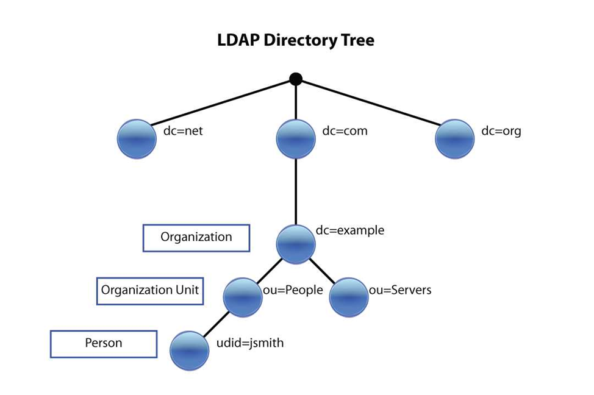

Сурцов Владимир Владимирович
В классической IT-инфраструктуре без централизованного каталога каждый узел живет своей жизнью.
Представьте компанию из 50 человек и 10 серверов (почта, файловое хранилище, оборудование, CRM, ERP, VPN). В классической схеме учетная запись пользователя Ивана Иванова существует в десяти разных местах:
Администрирование: При приеме на работу системный администратор должен 10 раз создать одного и того же пользователя. При увольнении — 10 раз его удалить. Если администратор забудет удалить Ивана из VPN, уволенный сотрудник сохранит доступ к корпоративной сети извне. Это критическая дыра в безопасности.
Пользовательский опыт: У сотрудника 10 разных логинов и 10 разных паролей. Он их путает, записывает на стикерах, приклеенных к монитору.
Отсутствие актуальности: Если Иван сменил фамилию и хочет обновить почту, администратор должен вручную изменить поле mail в десяти разных системах. В половине из них он забудет это сделать.
Каталог — это не замена SQL, это специализированный инструмент для решения конкретной задачи: быстрого поиска и проверки подлинности.
LDAP (Lightweight Directory Access Protocol) — это протокол доступа к каталогу. Сам протокол — это просто набор правил общения. Данные хранятся в специальной базе данных — службе каталогов.
| Характеристика | Реляционная БД (SQL) | Каталог (LDAP) |
|---|---|---|
| Основная операция | Частая запись, сложные транзакции (перевод денег, оформление заказа). | Чтение и поиск (95% операций — чтение, 5% — запись). |
| Структура | Плоские таблицы со связями (JOIN). | Иерархическое дерево (DIT). |
| Скорость | Зависит от сложности запроса и индексов. | Мгновенный поиск по дереву (Read-optimized). |
| Транзакции | Полная поддержка (ACID). | Отсутствует. Нельзя сделать "BEGIN TRANSACTION" для изменения пользователя в почте и VPN одновременно. |
| Данные | Динамические, часто меняющиеся. | Относительно статичные (имена, должности, группы доступа). |
В 1980-х годах МСЭ (ITU-T) разработал стандарт X.500. Это была глобальная амбициозная идея: создать единый мировой электронный справочник. X.500 был невероятно мощным, но и невероятно тяжелым. Он работал поверх всего 7-уровневого стека протоколов OSI, требовал огромных вычислительных мощностей и был сложен в настройке.
В начале 1990-х годов в Мичиганском университете (США) решили, что для растущего интернета X.500 слишком громоздок. Они «отрезали» лишнее, оставив только самое необходимое для доступа к данным, и адаптировали протокол для работы поверх TCP/IP. Так появился LDAP — Lightweight Directory Access Protocol (облегченный протокол доступа к каталогам). Слово «облегченный» здесь ключевое.
Каталог — это «Единая версия правды» (Single Source of Truth) для идентификации.Типичные объекты (записи) в каталоге:
Данные в LDAP — это не таблицы, а иерархическое дерево, которое визуально и логически похоже на файловую систему Linux.

DIT (Directory Information Tree) — информационное дерево каталога.
В LDAP путь (Distinguished Name) пишется наоборот: от конкретного объекта к корню. Пример: uid=ivanov,ou=it,dc=example,dc=com. Самая уточняющая информация (имя пользователя) — слева, самый общий контекст (домен компании) — справа.
Это полный, абсолютный путь к объекту в дереве. Он уникален во всей базе. По нему LDAP находит конкретную запись.
Структура: RDN_1, RDN_2, ..., RDN_N
Пример: uid=iivanov,ou=People,dc=example,dc=com
Это часть DN, которая уникальна только на своем уровне вложенности (внутри своей «папки»).
В примере выше: uid=iivanov — это RDN. Он уникален внутри ou=People. В соседнем отделе ou=Marketing вполне может быть свой uid=iivanov.
В отличие от файловых систем, где папки называются просто именами, в LDAP каждая «папка» и «файл» обязаны иметь атрибуты.
dc=example,dc=com (Корень)
├── ou=People (Ветка)
│ ├── uid=jsmith (Лист 1) -> RDN: uid=jsmith
│ └── uid=kpetrov (Лист 2) -> RDN: uid=kpetrov
└── ou=Groups (Ветка)
├── cn=it-admins (Лист 3)
└── cn=all-company (Лист 4)
В SQL структуру таблицы вы создаете командой CREATE TABLE. В LDAP структура определяется схемой (Schema) и объектными классами.
Это поля данных. У каждого атрибута есть строгие правила:
Это шаблоны, которые говорят: «Если запись хочет быть пользователем, она ОБЯЗАНА иметь (MUST) такие-то атрибуты и МОЖЕТ иметь (MAY) такие-то».
Классы в LDAP работают как классы в объектно-ориентированном программировании. Иерархия класса inetOrgPerson (современный стандарт для пользователя):
inetOrgPerson -> organizationalPerson -> person -> top
Когда вы создаете запись для Ивана Иванова, вам не нужно перечислять все классы. Вы просто пишете в LDIF-файле: objectClass: inetOrgPerson. LDAP-сервер автоматически понимает, что этой записи теперь доступны и обязательны атрибуты из person, organizationalPerson и самого inetOrgPerson.
В LDAP три типа классов:
Модель клиент-сервер: Клиент (приложение, ОС, скрипт) подключается к серверу (OpenLDAP, Active Directory).